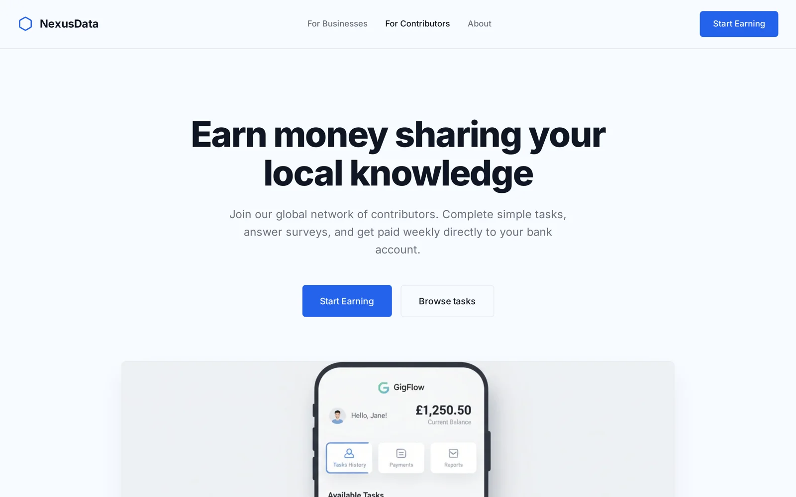
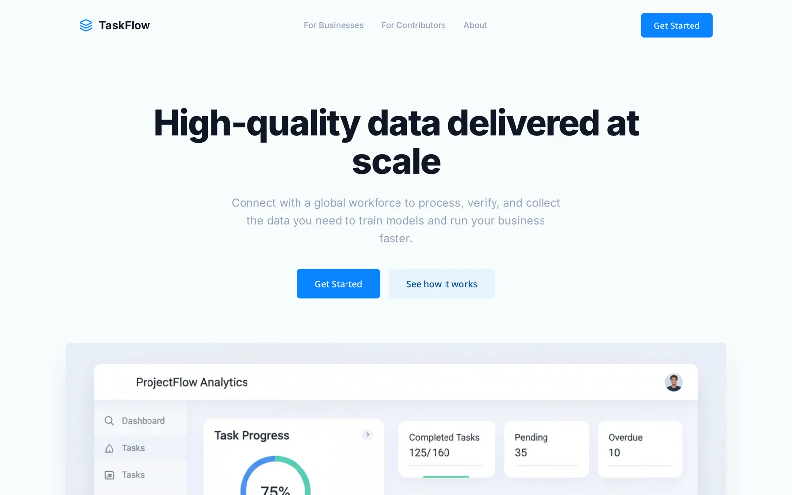

FIG. 07 — RESEARCH PROJECT
Nordata: one marketplace, two very different users.
A self-directed concept for a two-sided marketplace connecting Finland’s AI and data companies with a vetted network of remote contributors.
- Role
- UX Researcher & Product Designer, self-directed
- Timeframe
- 3 weeks (Jul–Aug 2026)
- Tools
- Figma, Banani, Miro
- Market
- Finland’s AI & data economy
Concept · not yet user-tested
Two-sided marketplace
The problem
Companies need data work done. People want flexible work.
Finland’s AI and data-driven companies, from Helsinki startups to Nordic offices of global firms, need well-labelled training data and localised market research. But building and managing a distributed contributor workforce is a heavy operational lift: payments, quality control, GDPR-compliant identity handling.
At the same time, plenty of people in Finland want flexible, remote task work. Nordata set out to explore a marketplace connecting the two: businesses request data-labelling, annotation or market-research work; a vetted contributor network completes it and gets paid weekly.
Process
How the work went.
- ResearchLooked at how existing data-labelling marketplaces are built.
- Find the gapsMapped where a Nordic product must differ: GDPR, Finnish, EU payouts.
- ExploreDesigned three landing directions for the two sides of the market.
- DecideChose two dedicated entry points over one shared page.
- NextTest that decision with target users. Not done yet.
Research
Where a Nordic product has to diverge.
I looked at how existing data-labelling marketplaces are structured. Most are built around US gig-platform conventions: card-based payouts and English-only flows. I mapped where a Nordic product would need to diverge: GDPR-first data handling, Finnish-language support, and payouts that match standard EU bank transfers.
I also treated the two sides of the marketplace as separate design problems from the start. An enterprise buyer evaluating a vendor and a contributor deciding whether task work is worth their time are weighing completely different things.
What I designed
Three landing directions, tested against each other.
01Enterprise-first
Dashboard hero, compliance signals and ROI-led copy, aimed at technical or procurement buyers.
02Contributor-first
Earn-money hero, task cards and payout clarity, aimed at people deciding if flexible task work suits them.
03Shared “who it’s for”
Businesses, Contributors and Researchers segmented on one page, tested as an alternative to two separate entry points.
04The decision
The shared page diluted both messages, so two dedicated entry points win, both funnelling into the same product.
Screens
The three landing directions.
Concept designs made with Banani as a starting point, then chosen and edited by me. Brand names, logos and the testimonial are placeholders. Select an image to open the full page.

Direction 1 · Businesses
Speak to the buyer.
Question What does a technical or procurement buyer need to see first?
Direction The headline is about scale, the calls to action are Start Free Trial and Request Demo, and a dashboard preview sits under the hero.
Why A buyer evaluating a vendor looks for control and proof, so the page shows the product.

Direction 2 · Contributors
Speak to the person deciding if it is worth their time.
Question Does flexible task work suit me, and when do I get paid?
Direction The headline is about earning, the copy says contributors are paid weekly to their bank account, and a phone shows a balance and available tasks.
Why A contributor weighs money and effort, so payout is in the first screen.

Direction 3 · One shared page
One page, three audiences.
Question Can a single page serve businesses, contributors and researchers?
Direction A Who it’s for section splits the page into three cards, followed by How it works in three steps and reasons to choose the service.
Why Tested against the two dedicated pages. It spreads the message across three groups, which is why I chose two entry points.
Takeaway
Two doors into one product.
I’d carry forward one enterprise page leading with data protection and quality control, and one contributor page leading with flexibility and payout speed.
This is still a concept and hasn’t been user-tested. The next step would be validating the two-page decision with a handful of target users on each side.